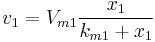
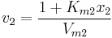

Contents |


Two independent and two dependent variables, no shared parameters.
Number: 4
Names: Vm1, Km1, Vm2, Km2
Meanings: Vm1 = unknown, Km1 = unknown, Vm2 = unknown, Km2 = unknown
Lower Bounds: none
Upper Bounds: none
FITFUNC\HILLBURK.FDF
Multiple Variables